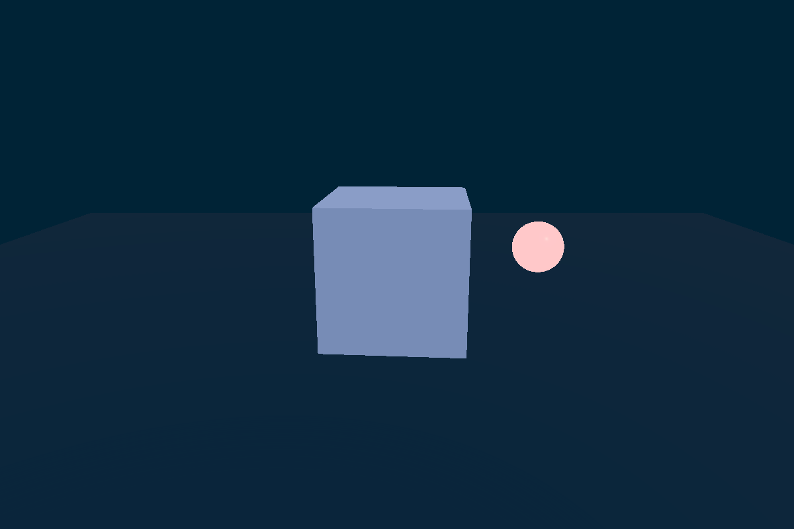
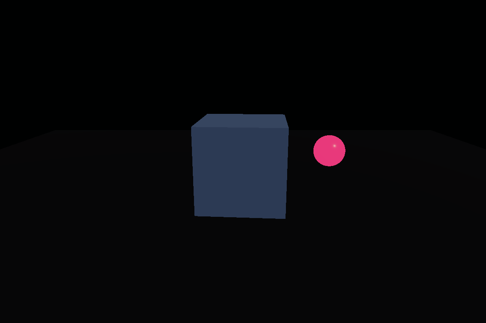
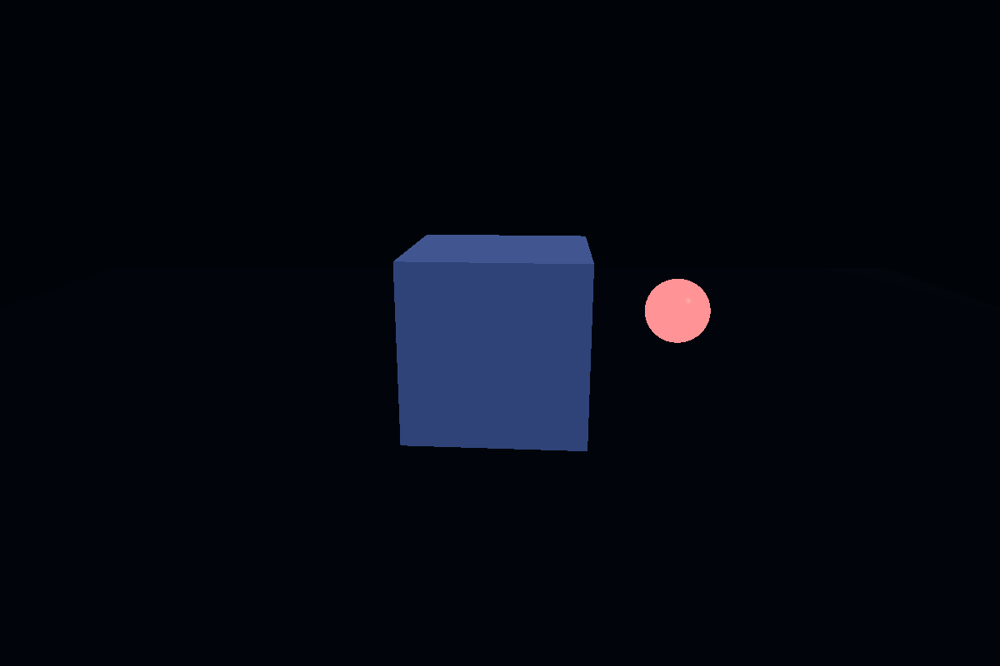

Primary implementation surface
These routes are generated from canonical source. Their exact status remains separate from implementation availability.

Exposure and grading render-target readbackBuild a workload-selected WebGPU/TSL exposure and grading path in Three.js. Use for fixed, sampled, reduced, or histogram luminance metering; GPU-resident EV adaptation; explicit tone-map/output ownership; and domain-correct lut3D grading chosen from measured scene and target requirements.
These routes are generated from canonical source. Their exact status remains separate from implementation availability.
This skill contributes to the following cross-skill owner graphs.
f5f18643cb1d source hash
10 fixed states · 12 runtime proof requirements
Final image systemsEvidence pending
cd1a484962b5 source hash
10 fixed states · 4 runtime proof requirements
Relativistic cinematicEvidence pending
Exposure is metered on the GPU: a compute reduction averages log-luminance over the frame (log so that a bright sliver doesn't dominate):
$$\bar L = \exp\!\left(\frac{1}{N}\sum_i \log\big(\epsilon + L_i\big)\right), \qquad L_i = 0.2126R + 0.7152G + 0.0722B$$Adaptation follows the eye asymmetrically — fast to light, slow to dark — as an exponential approach with split time constants:
$$E_{t+dt} = E_t + (E_{target} - E_t)\,\big(1 - e^{-dt/\tau}\big), \qquad \tau = \begin{cases}\tau_{up} & E_{target} > E_t\\ \tau_{down} & \text{otherwise}\end{cases}$$Exposure state lives in a storage buffer — no CPU readback stall. One node owns tone mapping and output color transform; grading applies after tone mapping through a 3D LUT: $c' = \operatorname{LUT}_{3D}(\operatorname{tonemap}(E\cdot L))$. Two owners of the output transform is the classic double-transform bug.
Every image identifies what it proves. Page screenshots demonstrate the published presentation only; generated inputs demonstrate asset channels only; canonical acceptance still requires render-target readback and a schema-v2 bundle.
6 published images
inspected runtime evidence preview
inspected runtime evidence previewThe complete SKILL.md as loaded by agents — verbatim, rendered.
Use one WebGPURenderer, one RenderPipeline, one scene-linear HDR source, one
GPU-resident exposure state per declared exposure-control group, one tone-map
owner, and one output conversion owner. A group may span target/views only when
their radiance binding, meter mask, exposure-key policy, sample-time policy, and
reset history are identical. Choose the meter by measured marginal cost. For an exact global mean, a
direct full-pixel reduction has fewer intermediate writes than an exposure-only
pyramid; a sampled estimator reads fewer source pixels but is not exact.
Read references/scene-referred-color-pipeline.md before implementation. It defines the metering decision, temporal taps, EV adaptation, LUT domains, r185 API proof, and measured budget contract.
Every numeric value in an implementation or recommendation must carry one tag:
[Derived]: follows from a formula, format, dimensions, or verified API;[Gated]: legal only after a named capability/correctness gate;[Measured]: captured on the named browser, device, resolution, and graph;[Authored]: an intentional look/control starting value, never a performance
fact.Do not publish an untagged workgroup size, sample grid, percentile, EV clamp, time constant, LUT dimension, cadence, memory figure, or timing target.
scene-linear lighting / AO / atmosphere
-> temporal reconstruction of stable scene radiance, when enabled
-> meter tap from resolved pre-bloom HDR by default
-> bloom and other authored scene-linear optical contributions
-> apply adapted exposure
-> tone map
-> tone-mapped-linear LUT, when that is the LUT contract
-> output conversion
-> display-encoded effects / dither / UI, when their domains require it
The pre-bloom tap avoids an exposure/bloom feedback loop. Metering bloom is an
[Authored] shot policy and must be regression-tested. Keep temporal history
unexposed; otherwise rescale history by the exposure ratio or reject it.
When the route declares a physics-to-render boundary, consume the immutable
PhysicsPresentationCandidate -> CameraViewPublication ->
ViewPreparationPublication ->
PhysicsPresentationSnapshot chain and bind its matching
LightingTransportSnapshot through a provider-wide PresentedStatePair
(entityId: typed-absence) in the Candidate and referenced by the Snapshot, as defined by the
physics domain and interaction contract.
Validate the exact central lighting and presentation schemas; do not redeclare
an exposure-local record. Each consumed incidentRadiance,
surfaceIrradiance, directSolarIrradiance, skyIrradiance, transmittance,
and sourceDirection channel has its own basis, quantity, SI unit,
sampleInstant/actualPhysicsTime, validity, and error. Normalization belongs only to the derived
render-local signal described below. Applied atmosphere/cloud/
visibility factors are versioned through attenuationFactorIds. Match the
pair's context/provider/signal IDs, descriptor/state/resource generations,
PresentationStateHandle, requested presentation instant and mapped source
instant. Channel clocks may differ from the presentation clock only through the
declared PresentationSampleProvenance clock mapping; validate channel
actualPhysicsTime, age, filter, maximum staleness, validity, and error against
the target/view currentRenderSampleInstant.
The provenance requestedPresentationInstant and bundle sampleInstant are
narrow PhysicsInstant values. Provider requestedPhysicsTime and channel
actualPhysicsTime are PhysicsTime wrappers whose discriminant selects
exactly one arm consistent with the signal descriptor's timeSemantics; a raw
PhysicsInstant or PhysicsTimeInterval is invalid in either wrapper field.
Canonical lighting-provider channels remain SI-valued. The meter input is
scene-linear radiance in the declared working basis. A physically calibrated
render basis may retain those units. A normalized RGB render basis is a
separately named render-local signal produced by a versioned SI-to-render
conversion with reference scale, provenance, and error; it is not a normalized
canonical lighting channel. Do not let auto exposure conceal incompatible
radiance/irradiance units or per-skill compensating gains.
If transport values are irradiance, the lighting model converts them through
the declared BRDF/emission contract before the radiance meter tap.
A nonphysical route leaves the router physics fields not used and declares
only its render-local color contract.
ViewPreparationPublication.reactivePublications and
ViewPreparationPublication.resetDependencies
distinguish local radiance changes
from basis changes. Shadow commits and discontinuous foam/emissive/optical
updates flow through the meter normally and do not reset adaptation by default.
A change to radiance scale/basis, working primaries, quantity convention, or
the authored exposure key must either provide an exact EV conversion or reseed
meter accumulation and adapted state before use. Invalid lighting executes a
bounded canonical hold-prior action or selects an explicitly authored fixed
EV; it never mixes the bad sample into GPU state.
ViewPreparationPublication.resetDependencies is the immutable plan; record actual exposure conversion,
reduction reset, reseed, hold, and GPU submission in FrameExecutionRecord.
Do not use computeAsync() as a completion fence. Device loss invalidates the
exposure buffers, meter history, and timing evidence, then appends a
FrameExecutionRecord with overallStatus: device-lost, affected target
execution statuses device-lost, cancelled dependent actions, and
lost-generation entries in leaseDispositionById. The immutable snapshot remains audit
evidence but its lost-generation resource references are not bindable; rebuild
and reseed under the new backend/resource generation.
Choose in dependency order:
Do not infer that an internal BloomNode pyramid is reusable: r185 exposes the
bloom result, not its private mip chain.
// r185 API literals and backend test: [Gated: installed source]
await renderer.init();
if ( renderer.backend.isWebGPUBackend !== true ) {
throw new Error( 'Native WebGPU is required for this exposure path.' );
}
const canTimeGpu = renderer.hasFeature( 'timestamp-query' );
renderer.compute( exposureComputeNodes );
renderer.computeAsync() is valid and initializes on demand, but in r185 it
does not constitute a GPU-completion fence. Use getArrayBufferAsync() only for
scheduled diagnostics; exposure must never wait for CPU readback.
If, and only if, the user explicitly asks for teaching how to apply fallback
when WebGPU is unavailable, route that request to
../threejs-compatibility-fallbacks/.
renderer.toneMappingExposure fixed when adapted exposure is applied
explicitly;toneMapping() before a tone-mapped-linear LUT, then
renderOutput(..., NoToneMapping, renderer.outputColorSpace);renderOutput() before a LUT only when that LUT is explicitly authored
for the exact display primaries and transfer function;RenderPipeline.outputColorTransform = false whenever the graph contains
an explicit renderOutput();renderPipeline.needsUpdate = true after changing outputNode or output
ownership.[Measured] proof;Run $threejs-choose-skills for broad ownership. Use
$threejs-image-pipeline for shared MRT, temporal history, adaptive DPR, or
transient-lifetime decisions; $threejs-bloom for the HDR glare source; and
$threejs-visual-validation for fixed-view exposure and LUT evidence.
Preserved concept proxies and generated-asset previews. They are excluded from primary completion counts and link to the canonical lab through the schema-v2 registry.